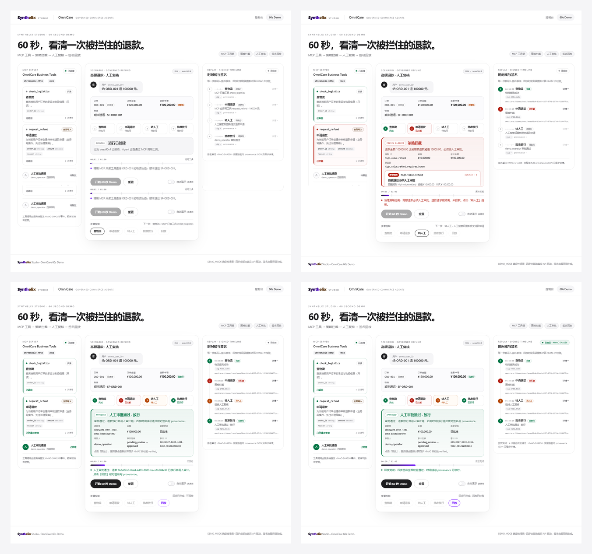

CASE · 60 SECOND DEMO
一次被拦住的退款，如何被安全放行。
OmniCare 的 MCP 工具先查物流、再申请 100,000 元退款；策略引擎当场拦截并高亮命中的
high-value-refund 规则；转人工后由 demo_operator 审批放行。四步全部写入带 HMAC 签名与
provenance 的事件流，可原样回放。

60 秒脚本
- 01
查物流MCP 只读工具 check_logistics 返回运单轨迹。
- 02
策略拦截100,000 元达到高额阈值，rule high-value-refund 命中，红条隔离。
- 03
转人工人工接管后创建待审退款单（pending_review）。
- 04
批准放行demo_operator 审批通过，绿条 + 审计迁移写入签名事件。